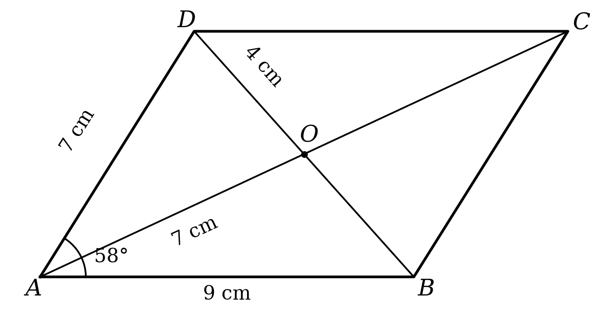

The problems are grouped on the three levels from “What I need to know for the test”. For each problem draw a figure and always write down the property you use.
Basic level
-
The convex quadrilateral $ABCD$ has $\sphericalangle A = 75{^\circ}$ and $\sphericalangle B = 105{^\circ}$, and angle $C$ is $20{^\circ}$ larger than angle $D$. Find the measures of angles $C$ and $D$.
-
In the figure below, $ABCD$ is a parallelogram, $AC \cap BD = \{ O\}$, $AB = 9\text{ cm}$, $AD = 7\text{ cm}$, $\sphericalangle DAB = 58{^\circ}$, $AO = 7\text{ cm}$ and $OD = 4\text{ cm}$. Using the data in the figure, write A in the box if the statement is true or F if it is false.

Statement A / F a) $CD = 9\text{ cm}$ b) $BC = 9\text{ cm}$ c) $P_{ABCD} = 16\text{ cm}$ d) $\sphericalangle BCD = 58{^\circ}$ e) $\sphericalangle ABC = 58{^\circ}$ f) $OB = 4\text{ cm}$ g) $AC = 14\text{ cm}$ h) $AC = BD$ -
The diagonals of the convex quadrilateral $ABCD$ meet at the point $O$. Decide, in each case, whether $ABCD$ is a parallelogram and justify your answer.
a) $OA = OC = 5\text{ cm}$ and $OB = OD = 3\text{ cm}$;
b) $OA = OC = 5\text{ cm}$, $OB = 3\text{ cm}$ and $OD = 4\text{ cm}$.
c) In the case at point a), knowing that $AB = 7\text{ cm}$, find the length of the side $CD$.
-
In the triangle $ABC$, the points $M$ and $N$ are the midpoints of the sides $AB$ and $AC$ respectively.
a) If $MN = 4,5\text{ cm}$, calculate the length of the side $BC$. What is the position of the lines $MN$ and $BC$?
b) If $MN + BC = 18\text{ cm}$, calculate the lengths of the segments $MN$ and $BC$.
Consolidation level
-
The measures of the angles $A$, $B$, $C$ and $D$ of the convex quadrilateral $ABCD$ are directly proportional to the numbers $4$, $5$, $4$ and $5$ respectively.
a) Find the measures of the angles of the quadrilateral.
b) Show that the quadrilateral $ABCD$ is a parallelogram.
-
The perimeter of the parallelogram $ABCD$ is $48\text{ cm}$, and the side $AB$ is $6\text{ cm}$ longer than the side $BC$.
a) Calculate the lengths of the sides of the parallelogram.
b) Knowing that angle $BAD$ is $40{^\circ}$ smaller than angle $ABC$, find the measures of the angles of the parallelogram.
-
In the triangle $ABC$, the points $M$, $N$ and $P$ are the midpoints of the sides $AB$, $AC$ and $BC$ respectively. The lengths of the sides $AB$, $BC$ and $AC$ are directly proportional to the numbers $3$, $4$ and $5$ respectively, and the perimeter of the triangle $MNP$ is $18\text{ cm}$.
a) Calculate the perimeter of the triangle $ABC$.
b) Calculate the lengths of the sides of the triangle $ABC$ and the lengths of the segments $MN$, $NP$ and $MP$.
Advanced level
-
The measures of the angles $A$, $B$, $C$ and $D$ of the convex quadrilateral $ABCD$ are inversely proportional to the numbers $4$, $4$, $6$ and $3$ respectively.
a) Find the measures of the angles of the quadrilateral $ABCD$.
b) Say which two sides of the quadrilateral are parallel and justify.
c) Is $ABCD$ a parallelogram? Justify your answer.
-
In the parallelogram $ABCD$, $AB = 12\text{ cm}$ and $AD = 7\text{ cm}$. On the side $CD$ consider the point $E$ such that $DE = 7\text{ cm}$.
a) Show that $\sphericalangle DAE \equiv \sphericalangle DEA$.
b) Show that the ray $AE$ is the bisector of angle $BAD$.
c) Calculate the length of the segment $EC$ and, knowing that $\sphericalangle ADC = 110{^\circ}$, find the measure of angle $EAB$.
-
In the triangle $ABC$, the points $M$ and $N$ are the midpoints of the sides $AB$ and $AC$ respectively. On the ray $MN$ consider the point $D$ such that $N$ is the midpoint of the segment $MD$.
a) Show that the quadrilateral $MBCD$ is a parallelogram.
b) Show that the quadrilateral $AMCD$ is a parallelogram.
c) Knowing that $AB = 10\text{ cm}$ and $BC = 14\text{ cm}$, calculate the perimeter of the parallelogram $MBCD$.